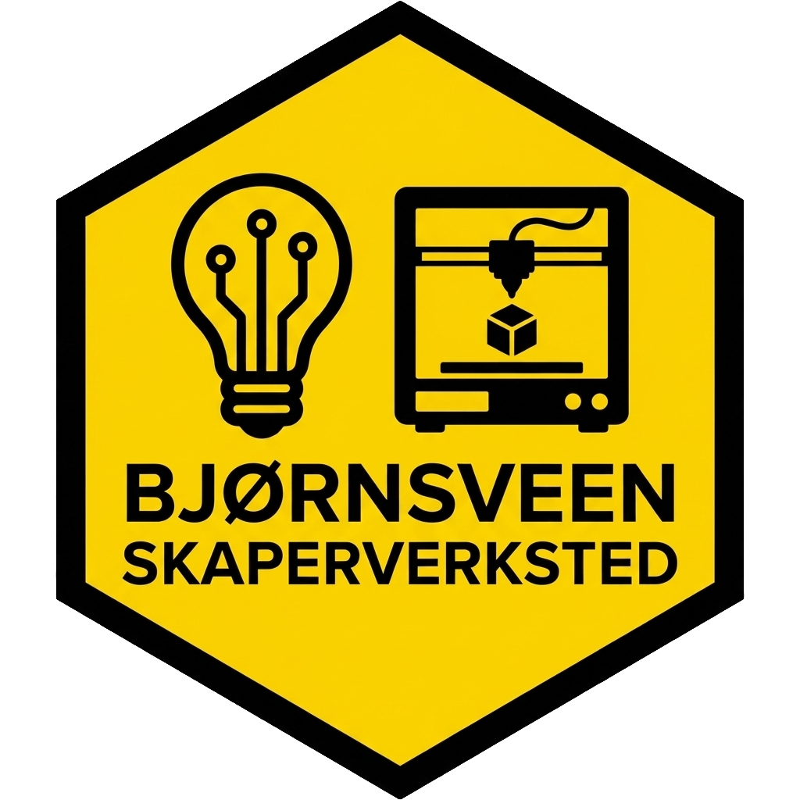

En levende idé i konstant vekst og utvikling
Se hva vi har i dagBjørnsveen Skaperverksted er ikke et statisk prosjekt, men en levende idé som vokser og formes hver dag. Vi implementerer stadig nye tanker for å skape en arena der skaping, utforsking, fikling og nysgjerrighet står i sentrum. Her møtes moderne verktøy og menneskelig kreativitet.
Vi er allerede godt i gang! Her er en oversikt over maskinene som er operative i verkstedet akkurat nå.
Gratis* for alle under 24 år.
Vi fanger opp grupper som ikke alltid finner sin plass i idretten. Her er det ingen krav til prestasjon – bare til nysgjerrighet og fikling.
Vi gir ungdommer opplæring i avanserte digitale verktøy og skaper en arena for mestring på tvers av sosioøkonomisk status.
* Medlemmer betaler en årlig kontingent på kun 50 kr. Vi søker midler for å sikre helt gratis forbruksmateriell for alle under 24 år.
Vi lærer hvordan vi fikser i stedet for å kaste. Verkstedet er et senter for sirkulær tenking.
Med 3D-printing produserer vi deler som forlenger levetiden til produkter som ellers ville blitt avfall.
Vi trenger kraftig maskinvare for å drive programvareen bak maskinparken.
Vi trenger et robust IT-miljø for trådløs maskinkommunikasjon.
Fokus på strømkapasitet og ventilasjon/avsug for trygg produksjon.